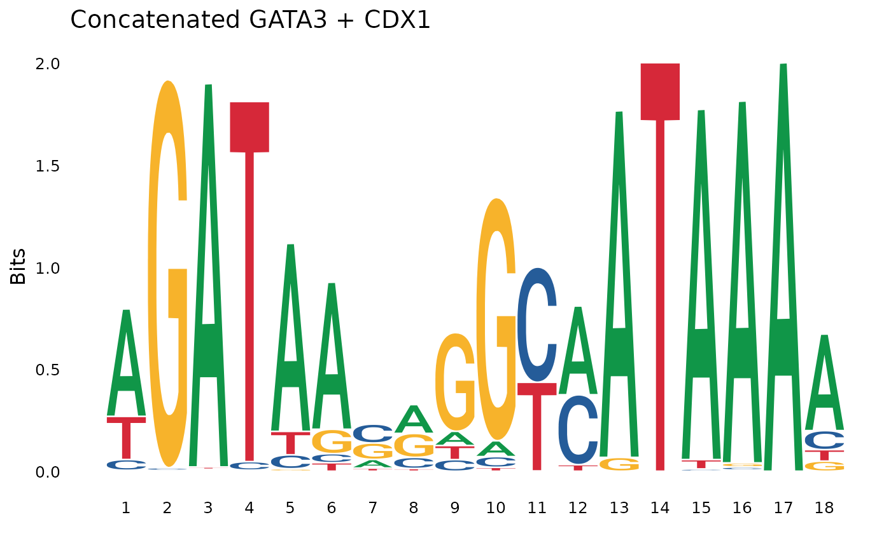
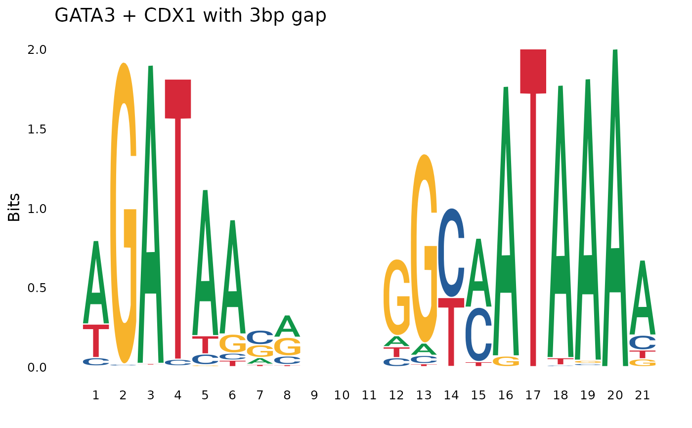
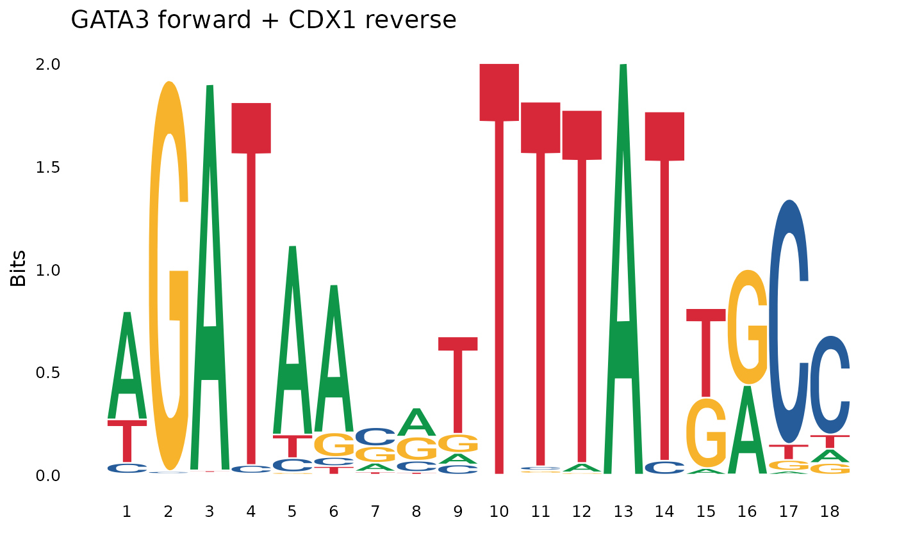
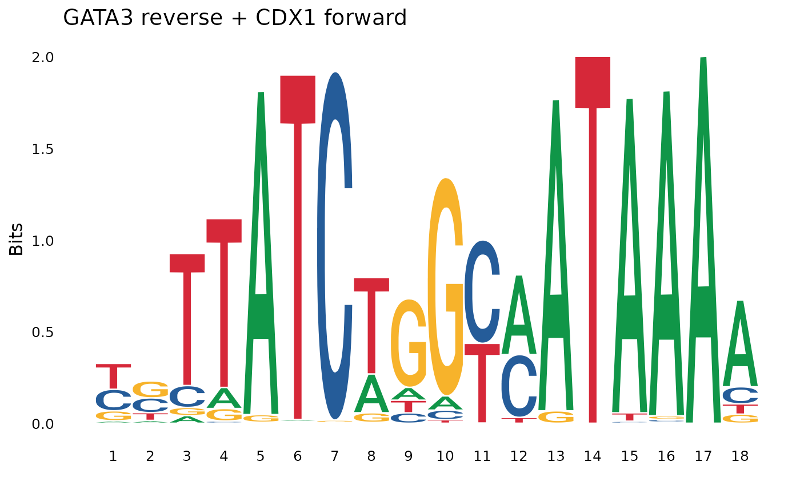
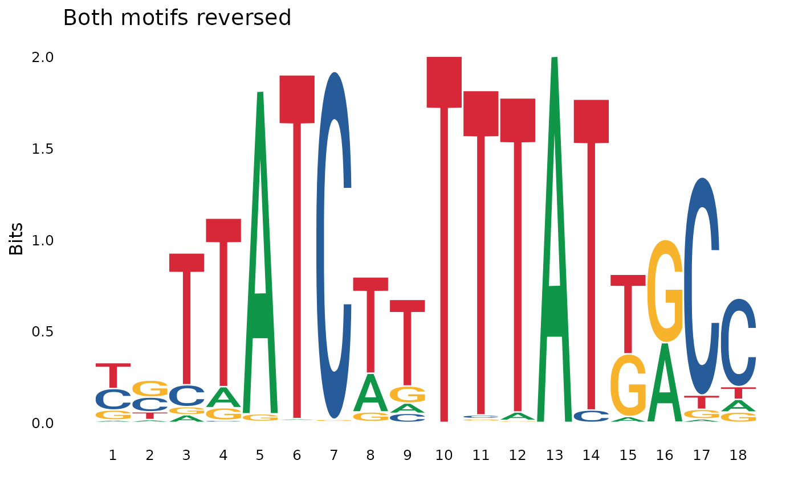
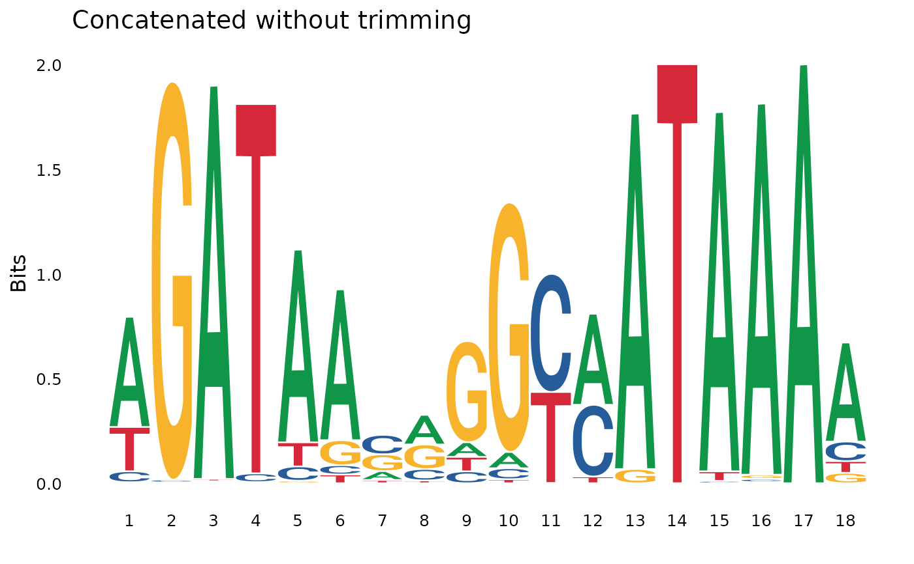

Concatenate two PSSM matrices
pssm_concat.RdConcatenate two PSSM matrices
Usage
pssm_concat(
pssm1,
pssm2,
gap = 0,
trim = TRUE,
bits_thresh = 0.1,
orientation = "ff"
)
concat_pssm(
pssm1,
pssm2,
gap = 0,
trim = TRUE,
bits_thresh = 0.1,
orientation = "ff"
)Arguments
- pssm1, pssm2
PSSM matrices
- gap
The gap between the two PSSM matrices, can be 0
- trim
Whether to trim the PSSM matrices
- bits_thresh
The threshold value for bits per position. Positions with bits above this threshold will be kept, while positions with bits below this threshold at the beginning and the end of the motif will be removed. The default value is 0.1.
- orientation
The orientation of the PSSMs. One of "ff" (forward-forward), "fr" (forward-reverse), "rf" (reverse-forward), "rr" (reverse-reverse). Default is "ff".
Examples
# Basic concatenation of two motifs
pssm1 <- as.matrix(MOTIF_DB["HOMER.GATA3_2"])
pssm2 <- as.matrix(MOTIF_DB["JASPAR.CDX1"])
concat_motif <- pssm_concat(pssm1, pssm2)
plot_pssm_logo(concat_motif, title = "Concatenated GATA3 + CDX1")

# Concatenation with a gap
concat_with_gap <- pssm_concat(pssm1, pssm2, gap = 3)
plot_pssm_logo(concat_with_gap, title = "GATA3 + CDX1 with 3bp gap")

# Different orientations
concat_fr <- pssm_concat(pssm1, pssm2, orientation = "fr") # forward-reverse
plot_pssm_logo(concat_fr, title = "GATA3 forward + CDX1 reverse")

concat_rf <- pssm_concat(pssm1, pssm2, orientation = "rf") # reverse-forward
plot_pssm_logo(concat_rf, title = "GATA3 reverse + CDX1 forward")

concat_rr <- pssm_concat(pssm1, pssm2, orientation = "rr") # reverse-reverse
plot_pssm_logo(concat_rr, title = "Both motifs reversed")

# Without trimming
concat_no_trim <- pssm_concat(pssm1, pssm2, trim = FALSE)
plot_pssm_logo(concat_no_trim, title = "Concatenated without trimming")
